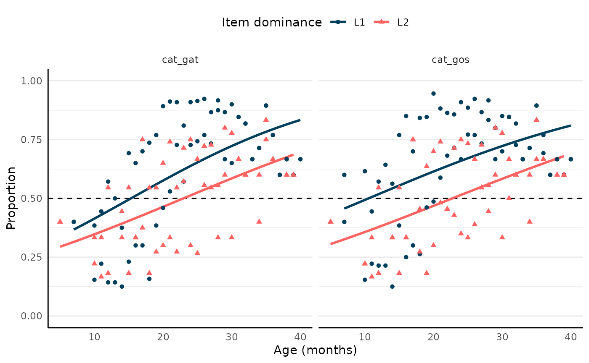

The function bvq_norms() computes the proportion of
children in the sample that understand or produce each item. This
function returns the estimated probability of an average participant to
understand or produce each item, and allows to condition this
probability to the age, language profile or language dominance of
participants. Proportions are adjusted for zero- and one-inflation
following Gelman, Hill, and Vehtari (2020).
If argument item is left NULL (default), proportions are
computed for all items (currently nrow(pool)). This may
take time. If you need to compute norms for specific items, you can
provide the item identifiers in the item argument.
Available items can be consulted in the pool data set:
library(bvq)
head(pool)
#> # A tibble: 6 × 14
#> item language te label xsampa n_lemmas is_multiword subtlex_lemma
#> <chr> <chr> <int> <chr> <chr> <int> <lgl> <chr>
#> 1 cat_pessigoll… Catalan 1 (fer… "p@.s… 1 FALSE pessigolles
#> 2 cat_abracar Catalan 2 abra… "@.B4… 1 FALSE abraçar
#> 3 cat_obrir Catalan 3 obrir "u\"B… 1 FALSE obrir
#> 4 cat_acabar Catalan 4 acab… "@.k@… 1 FALSE acabar
#> 5 cat_llancar Catalan 5 llan… "L@n\… 1 FALSE llançar
#> 6 cat_apagar Catalan 6 apag… "@.p@… 1 FALSE apagar
#> # ℹ 6 more variables: wordbank_lemma <chr>, childes_lemma <chr>,
#> # semantic_category <chr>, class <chr>, version <list>, include <lgl>Let’s go through an example of how to use the bvq_norms
function for a specific set of items.
library(bvq)
participants <- bvq_participants()
responses <- bvq_responses(participants = participants)
my_items <- c("cat_gos", "cat_gat")
norms <- bvq_norms(
participants = participants,
responses = responses,
item = my_items,
# get data for production
type = "produces",
# get data for participants aged 1 to 45 months
age = c(1, 45),
# get data for bilinguals (exclude monolinguals and others)
lp = "Bilingual"
)#> # A tibble: 110 × 13
#> te item language age type lp dominance semantic_category
#> <int> <chr> <chr> <dbl> <chr> <chr> <chr> <chr>
#> 1 173 cat_gat Catalan 7 produces Bilingual Catalan Animals
#> 2 173 cat_gat Catalan 10 produces Bilingual Catalan Animals
#> 3 173 cat_gat Catalan 11 produces Bilingual Catalan Animals
#> 4 173 cat_gat Catalan 12 produces Bilingual Catalan Animals
#> 5 173 cat_gat Catalan 13 produces Bilingual Catalan Animals
#> 6 173 cat_gat Catalan 14 produces Bilingual Catalan Animals
#> 7 173 cat_gat Catalan 15 produces Bilingual Catalan Animals
#> 8 173 cat_gat Catalan 16 produces Bilingual Catalan Animals
#> 9 173 cat_gat Catalan 17 produces Bilingual Catalan Animals
#> 10 173 cat_gat Catalan 18 produces Bilingual Catalan Animals
#> # ℹ 100 more rows
#> # ℹ 5 more variables: item_dominance <chr>, label <chr>, .sum <int>, .n <int>,
#> # .prop <dbl>Visualised, these data look like this:
library(ggplot2)
ggplot(norms,
aes(age, .prop,
colour = item_dominance,
fill = item_dominance,
shape = item_dominance)) +
facet_grid(~item) +
geom_hline(yintercept = 0.5,
linetype = "dashed") +
geom_smooth(method = "glm",
method.args = list(family = "binomial"),
se = FALSE) +
geom_point() +
labs(x = "Age (months)",
y = "Proportion",
colour = "Item dominance",
fill = "Item dominance",
shape = "Item dominance") +
scale_y_continuous(limits = c(0, 1)) +
scale_colour_manual(values = c("#003f5c", "#ff6361")) +
theme_minimal() +
theme(
axis.line = element_line(colour = "black"),
legend.position = "top",
panel.grid.major.x = element_blank(),
panel.grid.minor.x = element_blank()
)